Encuestas y cuestionarios¶
Qué es¶
El módulo de encuestas permite crear cuestionarios con grupos de preguntas, lógica condicional entre preguntas, y cuotas de respuesta — usables tanto en campañas de marketing saliente como en atención al cliente entrante.
Cómo se usa¶
1. Crear la encuesta¶
En Encuestas → Gestión de encuestas → Agregar, define:
| Campo | Qué controla |
|---|---|
| Equipo | A qué equipo pertenece (campañas y atención al cliente solo pueden usar encuestas de su propio equipo) |
| Tipo | Normal (texto) o de voz — determina si el saludo/cierre son texto o audio |
| Cuota | Si se activa el límite de respuestas (ver más abajo) |
| Copiar de encuesta existente | Permite clonar grupos, preguntas y opciones de otra encuesta como punto de partida |
| Saludo / cierre | Texto (o audio) que el agente usa para introducir y cerrar la encuesta |
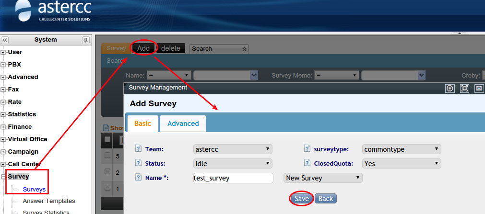
Una encuesta queda en estado libre hasta que una campaña o el módulo de atención al cliente la selecciona — en ese momento pasa a asignada y no puede ser tomada por otra tarea al mismo tiempo.
2. Definir grupos y preguntas¶
- Grupos de preguntas: agrupan preguntas relacionadas (ej. "filtro", "cuerpo", "datos del cliente"); pueden mostrarse en orden aleatorio.
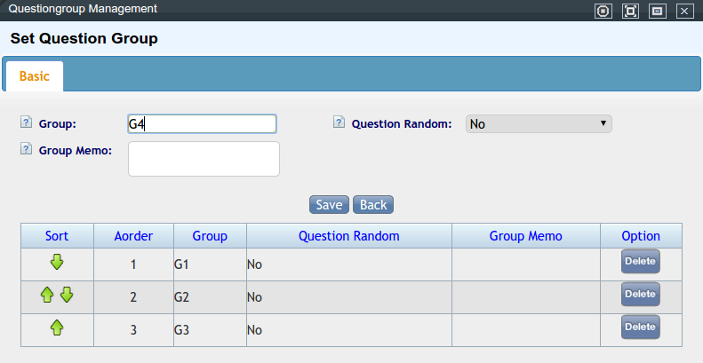
- Tipos de pregunta:
| Tipo | Comportamiento |
|---|---|
| Opción única | Una sola respuesta posible |
| Opción múltiple | Varias respuestas, con mínimo/máximo configurable |
| Combinada | Varias sub-preguntas que comparten el mismo set de opciones (tipo matriz) |
| Texto libre | Campo abierto para respuestas largas |
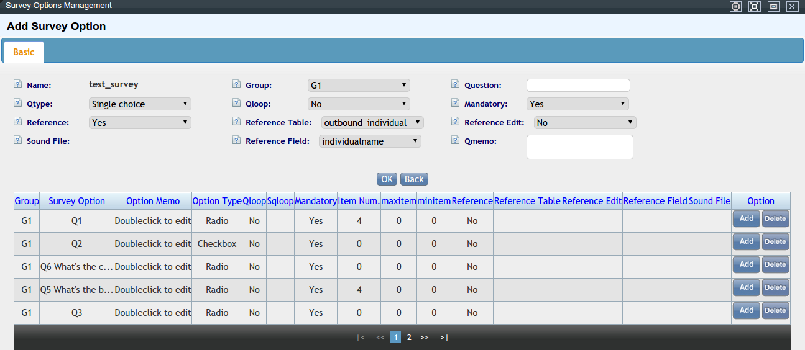
Al agregar las opciones de respuesta de una pregunta de opción única o múltiple, cada opción se configura como un ítem independiente (texto de la opción, si lleva campo de texto adicional, y si se reemplaza por otro valor al exportar):
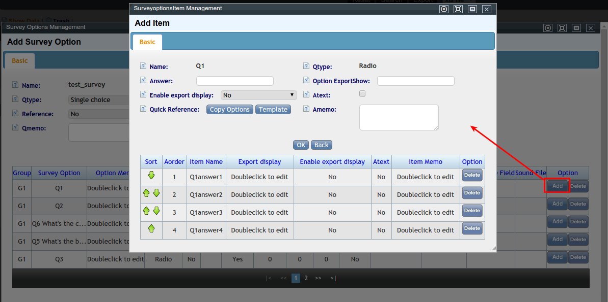
Para preguntas de tipo combinada (varias sub-preguntas con el mismo set de opciones, en forma de matriz), se configuran filas (sub-preguntas) y columnas (opciones) por separado:
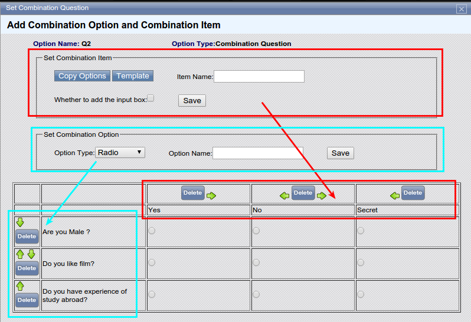
- Referenciar datos del cliente: una pregunta puede autocompletarse con un dato ya existente en la ficha del cliente (por ejemplo, si el campo "marca de auto" del cliente es "Toyota", la opción correspondiente se marca sola). Se puede permitir o no que el agente edite esa respuesta autocompletada. La tabla de clientes disponible para referenciar depende de a qué módulo de negocio está atada la encuesta (campaña saliente, atención al cliente, etc.) — dentro de esa tabla se elige el campo concreto cuyo valor completa la respuesta.
3. Ordenar y enlazar preguntas¶
- El orden de preguntas se define por grupo y luego dentro del grupo — arrastrando para reordenar.
- El relleno de preguntas permite insertar la respuesta de una pregunta anterior dentro del texto de una posterior, usando el marcador
[FILL](ej.: "¿A través de qué medios conoció la marca [FILL]?", donde[FILL]se sustituye por la respuesta de una pregunta previa sobre marca).
4. Lógica condicional¶
Permite saltar preguntas, ocultar preguntas u ocultar opciones según respuestas anteriores:
- Elige qué pregunta dispara la lógica.
- Define la condición (es igual a / contiene alguna de / no contiene ninguna de ciertas opciones).
- Define la acción: saltar a otra pregunta, ocultar una pregunta, u ocultar una opción.
- Define el objetivo de esa acción.
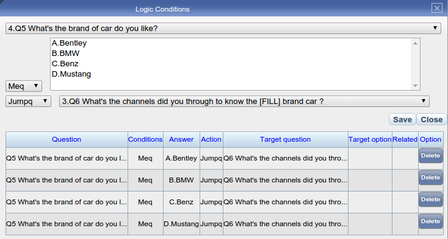
Usa la función de vista previa de encuesta para simular el recorrido de un agente y validar que la lógica funciona como se espera.
5. Cuotas¶
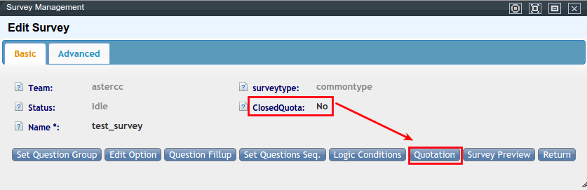
Solo disponibles si la encuesta tiene la cuota activada. Sirven para dejar de encuestar sobre un segmento una vez alcanzado un número de respuestas — evita gastar tiempo de agente en cuotas ya cubiertas. Dos formas de definir una cuota:
- Por encuesta/pregunta/opción: por ejemplo, "solo 1000 respuestas totales", o "solo 500 respuestas a la pregunta 2", o "solo 200 que elijan la opción B de la pregunta 3".
- Por dato del cliente: por ejemplo, "solo 1000 clientes de una ciudad + operador específico", o "solo 500 hombres".
Cada cuota admite un margen de sobrecupo (por cantidad o porcentaje) para absorber el desfase natural entre cuándo se corta la asignación y cuándo efectivamente se completan las últimas respuestas en curso.
6. Ver y exportar resultados¶
- Ve a Marketing outbound → Control de calidad, elige la tarea de campaña y la encuesta asociada, y busca.
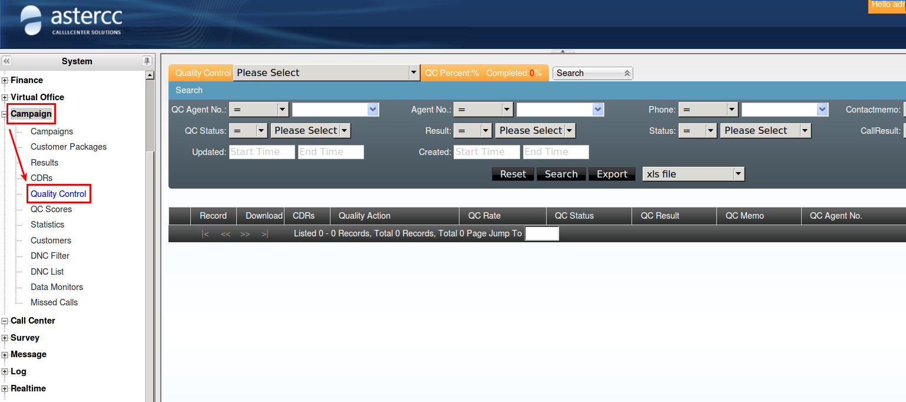
2. Solo se contabilizan clientes en estado "enviado con éxito" o "enviado con error". 3. Para exportar, elige el formato, agrega la tarea de exportación con su horario de ejecución, y descárgala luego desde Administración avanzada del call center → Gestión de archivos exportados.7. Plantillas de opciones (ahorro de tiempo al crear preguntas)¶
Ciertos sets de opciones se repiten constantemente entre encuestas (escalas de puntaje, niveles de satisfacción, género, etc.). En vez de escribirlas cada vez, se arma una plantilla de opciones reutilizable:
- En Encuestas → Plantillas de opciones → Agregar, define un nombre descriptivo (ej. "satisfacción 5 niveles", "puntaje 1-10 ascendente").
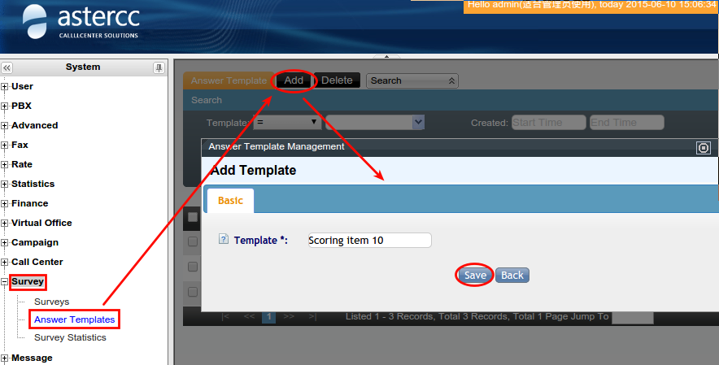
- Dentro de la plantilla, agrega cada opción con: texto de la opción, si lleva campo de texto adicional (ej. "otro — especifique"), el valor de exportación (para convertir texto a un puntaje numérico al exportar), y una nota visible solo para el agente.
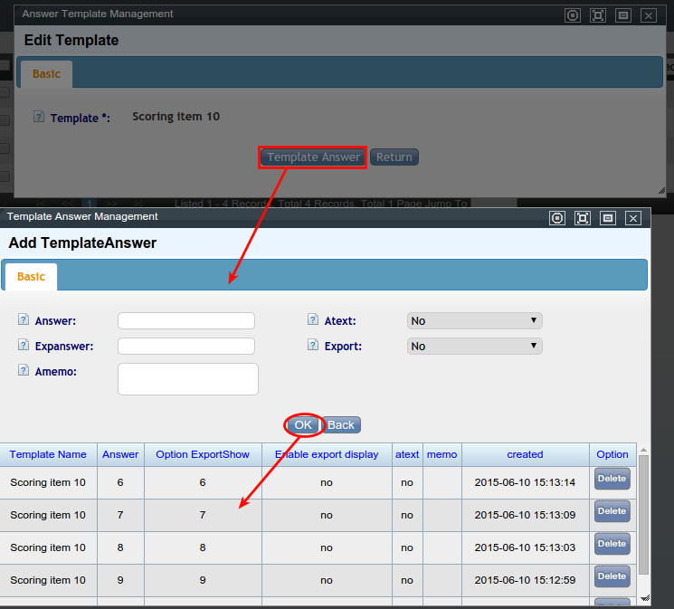
3. Al crear una pregunta de opción única/múltiple/combinada en cualquier encuesta, se puede importar esta plantilla completa en vez de tipear las opciones una por una.8. Distribución y avance de respuestas¶
En Encuestas → Distribución de encuesta, se elige la tarea de campaña y la encuesta asociada para ver dos tipos de estadística:
| Tipo | Qué muestra |
|---|---|
| Resultado de la encuesta | Cuántas veces se eligió cada opción de cada pregunta, y su porcentaje sobre el total de respuestas |
| Avance de finalización | Cuántas encuestas se completaron por día, en un rango de fechas |
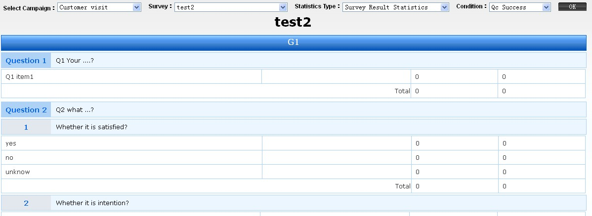
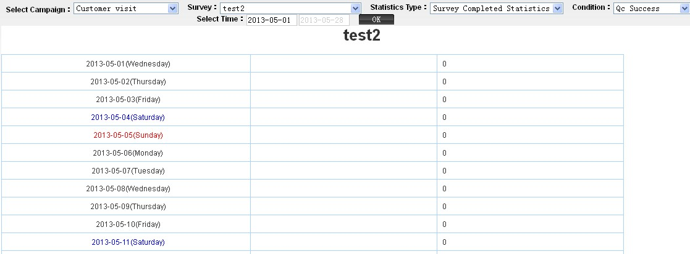
Ambos se pueden filtrar por estado: aprobado en control de calidad, enviado con éxito (según el agente), o enviado con error (según el agente) — útil para separar el avance "bruto" del agente de lo que realmente pasó la revisión de calidad.
Un artículo aparte, dentro de la sección de reportes del sistema, describe esta misma pantalla de distribución de encuestas (con los mismos dos tipos de estadística — por resultado y por avance de finalización — y los mismos filtros de estado) sin aportar información adicional; se cita como confirmación cruzada.
Referencia rápida¶
| Tarea | Dónde |
|---|---|
| Crear/editar encuesta | Encuestas → Gestión de encuestas |
| Reutilizar un set de opciones | Encuestas → Plantillas de opciones |
| Ver distribución de respuestas | Encuestas → Distribución de encuesta |
| Ver resultados de una campaña | Marketing outbound → Control de calidad |
| Descargar exportación | Administración avanzada del call center → Gestión de archivos exportados |
| Marcador de relleno de texto | [FILL] |
Fuentes¶
raw/zh/模块使用说明/问卷/问卷管理.txtraw/zh/模块使用说明/问卷/问卷选项模板.txtraw/zh/模块使用说明/问卷/问卷分布统计.txtraw/zh/模块使用说明/问卷.txtraw/zh/报表/问卷系统中的报表.txtraw/en/module_manual/survey/answer_templates.txtraw/en/module_manual/survey/survey_statistics.txtraw/en/module_manual/survey/surveys.txt